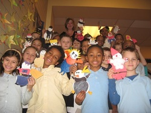

Family Resources
Family Friendly Activities
Spend some together time with these family activities that foster sharing, learning, and fun. Your kids will be glad you did. Though it can be challenging to find time to connect regularly as a family in today’s fast-paced world, doing so is important. Studies reveal that family time can boost kids’ self-esteem, enhance social development, and create strong relational bonds.
Follow this link for some new ideas for outdoor and indoor activities with the kids that will create special memories.
Multicultural Extracurricular Activities for Kids
By trying new activities that are fun, healthy, safe and family oriented, children become life-long learners and citizens of the world. Extracurricular activities that encourage respect for all cultural groups will promote success, academics and leadership skills, as they teach children to preserve and respect cultural heritage. These are Pittsburgh kids’ best bet for all of that and so much more.
Follow this link for some of these fun activities for the whole family!
Tutoring
Here are some resources to help you find the best tutors for your child in your area. These sites should help you narrow your choices down by age range, subject, geographical area, and tutor credentials.
Care.com
Best Tutoring Resources in Pittsburgh
After School Programs and Summer Camps

Each of the out-of-school programs listed on the website below provides a safe place for children, youth and/or young adults after their school day ends. Some offer programming during the summer as well. Each generally offers academic assistance to students during the school year, supplemented with enrichment activities. Contact the site nearest you for more information.
Follow this link to see a list of Allegheny County after school programs.